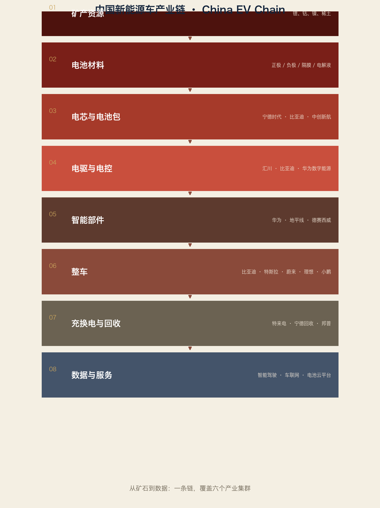

第一批 15 家，按第一卷企业模板简写。数据以 2024 年公开年报为主。
6.1 速查卡
华为
总部：深圳 成立：1987
营收：8621 亿元（2024，+22.4%） 研发：1797 亿元（占 20.8%）
员工：约 20.7 万（2024）
产品：通信设备、手机、昇腾 AI 芯片、智能汽车方案、数字能源
地位：全球通信设备第一集团；中国 AI 算力自主主力
对手：思科、诺基亚、爱立信、苹果、英伟达（昇腾对标）
趋势：昇腾生态、鸿蒙、智能汽车（乾崑）
比亚迪
总部：深圳 成立：1995（电池）/2003（汽车）
营收：7771 亿元（2024，+29.0%） 研发：542 亿元
员工：约 97 万（2024）
产品：新能源汽车、动力电池（弗迪）、半导体、电子代工
地位：2024 年新能源销量约 427 万辆，全球第一
对手：特斯拉、吉利、长安、宁德时代（电池）
趋势：全球化工厂、高端品牌（仰望/腾势）、智能化
宁德时代
总部：宁德 成立：2011
营收：3620 亿元（2024，-9.7%） 净利润：507 亿元（+15.0%）
员工：约 11.7 万
产品：动力电池、储能电池、电池材料回收
地位：动力电池全球市占率多年第一（约 35–40%，行业估算）
对手：比亚迪弗迪、LG 新能源、中创新航、亿纬锂能
趋势：麒麟/神行电池、钠离子、固态电池、欧洲工厂（德国/匈牙利）
汇川技术
总部：深圳 成立：2003
营收：370.4 亿元（2024，+21.8%） 净利润：42.9 亿元
员工：约 2.7 万
产品：伺服、变频器、PLC、新能源车电驱、机器人
地位：中国工业自动化本土第一（行业共识）
对手：西门子、安川、三菱、松下、台达
趋势：人形机器人部件、AI 调参、海外市场
海康威视
总部：杭州 成立：2001
营收：925.0 亿元（2024，+3.5%） 净利润：119.8 亿元
员工：约 5.9 万
产品：机器视觉、工业相机、移动机器人、安防、AI 开放平台
地位：全球机器视觉与智能物联第一集团
对手：基恩士、康耐视、大华、巴斯勒
趋势：工业 AI、机器人、场景数字化
大疆
总部：深圳 成立：2006
营收：数百亿元（未上市，行业估算约 300–400 亿元）
员工：约 1.4 万（估算）
产品：消费无人机、行业无人机、手持影像、车载激光雷达
地位：全球消费无人机市占率领先（行业估算超 70%）
对手：Skydio、道通、Parrot
趋势：车载智驾、行业自动化、机器人
美的集团
总部：佛山 成立：1968
营收：约 4090 亿元（2024） 员工：约 19 万
产品：家电、机器人（库卡）、楼宇科技、工业技术
地位：全球家电第一集团；库卡机器人的母公司
对手：海尔、格力、松下、大金
趋势：机器人自动化、海外本地化、绿色能源
海尔
总部：青岛 成立：1984
营收：海尔智家约 2860 亿元（2024） 员工：约 10 万+
产品：家电、工业互联网（卡奥斯）、生物医疗
地位：全球大型家电品牌销量前列
对手：美的、格力、三星、LG
趋势：场景品牌、灯塔工厂、工业互联网输出
京东方
总部：北京 成立：1993
营收：约 1980 亿元（2024，估算）
产品：LCD/OLED 面板、车载显示、物联网
地位：全球 LCD 面板出货面积第一集团
对手：三星显示、LG Display、TCL华星
趋势：OLED 高端化、车载、电子纸
中芯国际
总部：上海 成立：2000
营收：约 578 亿元（2024，约 80 亿美元）
产品：晶圆代工（成熟制程为主）
地位：中国大陆代工第一、全球前五
对手：台积电、联电、格芯、华虹
趋势：成熟制程扩产、先进封装、国产设备验证
长江存储
总部：武汉 成立：2016
营收：未公开（行业估算数百亿元）
产品：3D NAND 闪存（Xtacking 架构）
地位：中国存储芯片自主核心
对手：三星、SK海力士、铠侠、美光
趋势：232 层以上堆叠、国产设备供应链
埃斯顿
总部：南京 成立：1993
营收：约 50–70 亿元（2024，估算）
产品：六轴工业机器人、自动化系统
地位：中国工业机器人出货量第一集团
对手：发那科、ABB、库卡、安川、汇川机器人
趋势：机器人+AI、海外工厂
新松机器人
总部：沈阳 成立：2000（中科院沈阳自动化所背景）
营收：约 30 亿元级（2024，估算）
产品：移动机器人、工业机器人、洁净机器人
地位：中国移动机器人先行者
对手：海康机器人、极智嘉、快仓
趋势：半导体/新能源工厂自动化
三一重工
总部：长沙 成立：1989
营收：约 780 亿元（2024，估算）
产品：挖掘机、泵车、起重机、电动工程机械
地位：全球工程机械第一集团
对手：卡特彼勒、小松、徐工、中联
趋势：电动化、无人化矿山、海外制造
隆基绿能
总部：西安 成立：2000
营收：约 900 亿元（2024，估算）
产品：硅片、组件、氢能装备
地位：全球光伏硅片与组件第一集团
对手：晶科、天合、通威、晶澳
趋势：BC 电池、绿氢、全球工厂
6.2 这 15 张卡说明什么
1. 中国企业已不只在“组装层”：华为（芯片）、汇川（伺服）、宁德（电池）
2. 利润与研发投入正在向上游移动
3. 与第一卷的隐形冠军相比，中国头部企业更“显眼”，但“小巨人”才是下一层
4. 数据更新是常态：以上数字均需按最新年报逐年替换
6.3 第二卷数据与来源
国家统计局《2024 年国民经济和社会发展统计公报》
中汽协（汽车与新能源产销）
IFR《2025 世界机器人报告》
各公司 2024 年年度报告
海关总署、各港务集团公开数据
待核实：大疆、长江存储、埃斯顿、新松、三一、隆基等未上市或口径不一的数据。
词汇笔记（Vokabelnotiz）
| 中文 | Deutsch | English |
|---|---|---|
| 速查卡 | Schnellübersicht | Fact card |
| 垂直整合 | vertikale Integration | Vertical integration |
| 成熟制程 | ausgereifte Fertigung | Mature process node |
| 第一集团 | erste Liga | First tier |